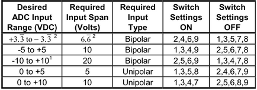

IO101 - Setup — Configure the IO101 input/output blocks
Your model can contain only one Setup block for each I/O module in your target machine.
All the supported I/O types for this module can be configured in the Setup block dialog box. This block will therefore have an impact on all the other driver blocks (Analog input, Analog output, Digital input and Digital output).
This control selects an I/O section, the parameters of which are then shown in the dialog box below the 'Parameter group' field. Possible groups are:
Module setup
Analog input setup
Analog output setup
Digital setup lower channel
Digital setup upper channel
The Module ID has two functions:
It defines the logical connection between the Setup block and its I/O blocks
It also informs the auto-search feature of the PCI Slot parameter. If only one I/O module of this type is installed, the Module ID must be set to 1. If n modules are installed, it must be in the range 1:n. Not all the I/O modules installed in the target machine need to be used. To see how each I/O module maps to a Module ID, use this Speedgoat API:
speedgoat.getIoInterfaces("TargetName", "mySpeedgoat")There are two approaches for mapping this block to a specific I/O module installed in your target machine. All modules of the same type must be configured using the same method.
Auto-Search: with the default value -1 the I/O module will be automatically located in the target machine. If you have multiple modules of the same kind, the Module ID defines which module is associated with this block. To see how each I/O module maps to a Module ID, use this Speedgoat API:
speedgoat.getIoInterfaces("TargetName", "mySpeedgoat")
Explicit Addressing: to explicitly define the logical address of the I/O module in the target machine, you can provide the PCI bus and slot numbers as a vector: [bus, slot]. To determine these numbers, run the following command in the MATLAB command window:
speedgoat.getIoInterfaces("TargetName", "mySpeedgoat", "Advanced", true)Note that the PCI address can change whenever an I/O module is added or removed – usually, auto-search is the best option.
Defines the first channel to be acquired (1..16 or 1..32, depending on the 'Input coupling' field).
Define the number of channels to be acquired beginning with the start channel defined above (1..16 or 1..32). If the 'Input coupling' field is set to Differential then a maximum of 16 channels are available. If the 'Input coupling' field is set to Single-ended then a maximum of 32 channels are available.
Select either Differential or Single-ended coupling. This applies to all input channels.
Select the input voltage range for all analog input channels. Attention: The DIP-switch on the I/O module must be set according to the selected range. It can be found near the center of the PCB, labeled SW1.

Either Standard or Low-latency. If I/O latency is not of concern to your overall model (target application) then choose standard. Low-latency mode reduces the latency when acquiring analog input channels. If the latter mode is selected then pins 1 and 2 on the module's I/O connector must be wired together.
In standard mode, the driver first starts the conversion, waits for it to finish and then reads the samples. In low-latency mode, the driver on the first sample hit just starts a counter. The IO101 I/O module decrements this counter until it reaches 0 and then automatically starts the conversion. The counter value is automatically set to put the conversion right before the next sample hit. On all following sample hits the driver reads the samples from the previous conversion and starts the counter to trigger the next one. Since we do not read any samples at the first sample hit, a shift is introduced.
While low-latency mode doesn't improve the conversion time (hardware limitation), it is possible to save several microseconds by avoiding the active wait. Generally, sample time needs to be greater than the conversion time.
Select the active input/output channels in a vector. A defined number of channels can be selected using square brackets, for example [1 2 3]. A sequence of channels can be selected using a colon, for example, 1:4.
Define whether the initial values are also applied once the application has stopped. The behavior can be set individually for each channel using a vector. A scalar value applies to all the channels; for example, for individual values, type "[1 0 0 1]", and to set all channels to zero, type "0". "1" means use the Initial Value and "0" means keep the latest value.
Define the initial signal level present on the outputs after the application has been downloaded. The values can be set individually by entering a vector: the value at a certain position in the Initial Values vector is applied to the channel as defined in the Active Channels vector. A scalar value applies to all the channels; for example, for individual values, type "[1 1.5 0 2.5]", and to set all channels to zero, type "0".
Values between 1 and 8 in a vector. This driver allows individual digital channels to be selected in any order. The number of elements defines the number of digital channels used. For example, to use two of the digital input channels, enter '[1,2]'. Number the channels beginning with 1, even if the board manufacturer starts with 0. This block uses channels 1-8 of the IO101 I/O module.
Defines whether the group of lower input channels will be configured as inputs or outputs. Note that all digital I/O channels within a group (upper or lower) must have the same direction.
When the 'Lower channels direction' field is defined as input, this field allows one of 5 debounce values to be defined for each channel individually. The values are 0, 4, 64, 1000, or 8000μs. Enter a scalar or a vector of the same length as the 'Lower channels vector' field. If a scalar value is specified, its value will be used for all channels.
When the 'Lower channels direction' field is defined as output, this field specifies the behavior of the channel at model termination. Enter a scalar or a vector of the same length as the channel vector. If a scalar value is specified, its value will be used for all channels. A value of 1 causes the corresponding channel to be reset to the value specified in the 'Lower channels initial value vector' field. A value of 0 causes the channel to remain at the last value used while the model was running.
When the 'Lower channels direction' field is defined as output, this field specifies the initial voltage values for the output channels. Enter a scalar or a vector of the same length as the 'Lower channels vector' field. If a scalar value is specified, its value will be the initial value for all channels. The channels are set to the initial values (0 for TTL low and 1 for TTL high) between the time the model is downloaded and the time it is started.
Values between 1 and 8 in a vector. This driver allows individual digital channels to be selected in any order. The number of elements defines the number of digital channels used. For example, to use two of the digital input channels, enter '[1,2]'. Number the channels beginning with 1, even if the board manufacturer starts with 0. This block uses channels 9-16 of the IO101 I/O module.
Defines whether the group of upper input channels will be configured as inputs or outputs. Note that all digital I/O channels within a group (upper or lower) must have the same direction.
When the 'Upper channels direction' field is defined as Input, the debounce vector allows one of 5 debounce values to be defined for each channel individually. The values are 0, 4, 64, 1000, or 8000μs. Enter a scalar or a vector of the same length as the channel vector. If a scalar value is specified, its value will be used for all channels.
When the 'Upper channels direction' field is defined as output, this field specifies the behavior of the channel at model termination. Enter a scalar or a vector of the same length as the 'Upper channel vector' field. If a scalar value is specified, its value will be used for all channels. If a value of 1 is specified, the corresponding channel will be reset to the value specified in the initial value vector. If a value of 0 is specified, the channel will remain at the last value attained while the model was running.
When 'Upper channels direction' field is defined as output, this field specifies the initial voltage values for the output channels. Enter a scalar or a vector of the same length as the channel vector. If a scalar value is specified, its value will be the initial value for all channels. The channels are set to the initial values (0 for TTL low and 1 for TTL high) between the time the model is downloaded and the time it is started.